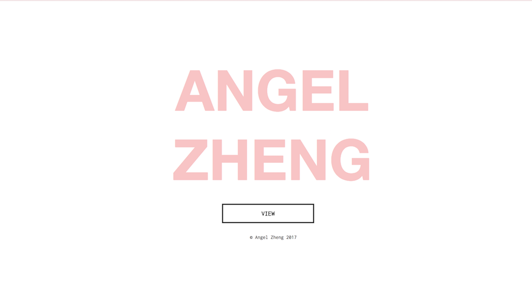
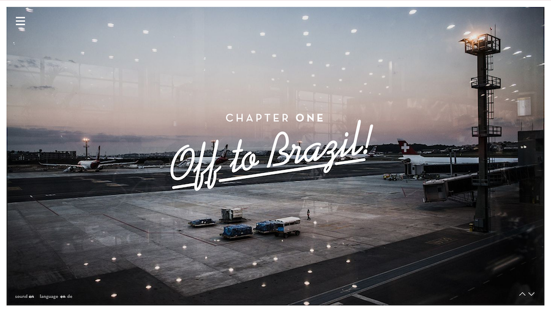
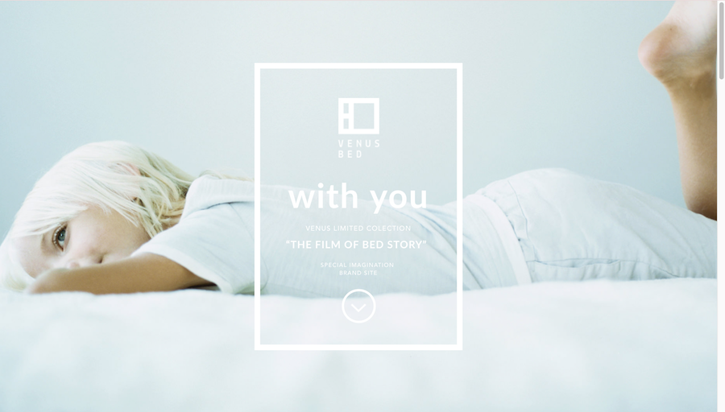
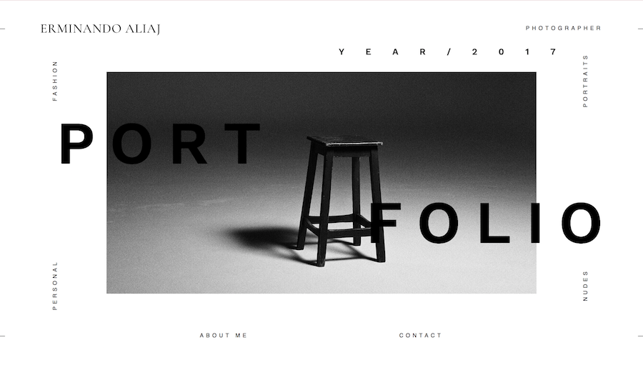
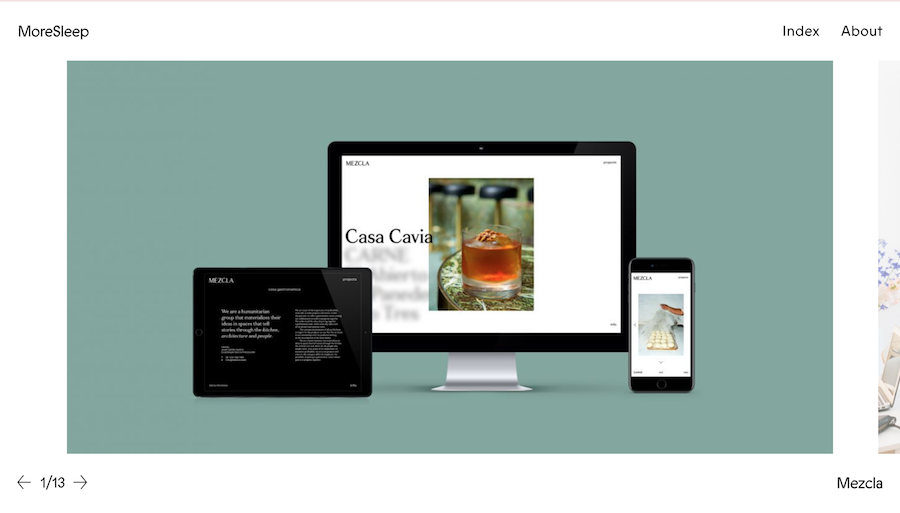

I intend to continue with the Project 1 site. One enhancement I want to make is to create an animation for my opening site page like how it shows on johos.at I want to animate my name first and then have the background image appear.
 I also want to implement a automatic background slideshow like it shows on venusbed.co.jp. Different images will be used as my background and my name will be centered on the site in either white or transparent.
My illustration page and gallery presentation of my works needs to be improved and I like erminandoaliaj.com’s idea of how when hovering over a word, the images change. I might label my categories like that or list out my project names on the margins like Aliaj’s site did. I also really like the layout of how the site is layed and I might make a slideshow gallery where more pictures and details of one project are showed with description.
Or another option I can use is from moresleep.net, I really like how when I clicked on an image, more in depth details are shown on a separate screen for that one specific subject. I want to include description and process or detail pictures of my projects as opposed to only including the final outcome. And if the prior example fails to work in any way, this is another approach that I want to follow.
These sites have a minimalistic and clean slate that I really adore but my current site looks empty and lack the minimalist style and these are the changes I would like to, if possible, to create.